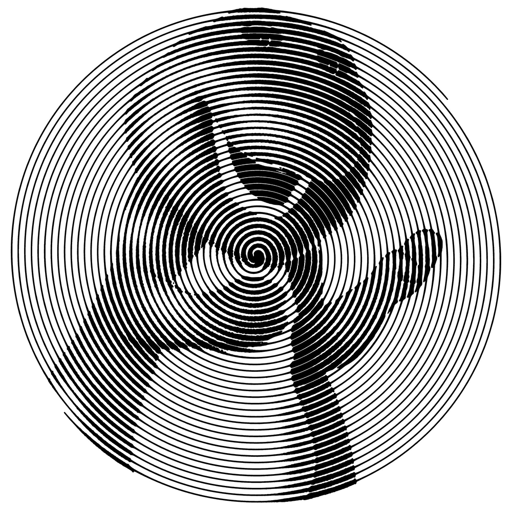
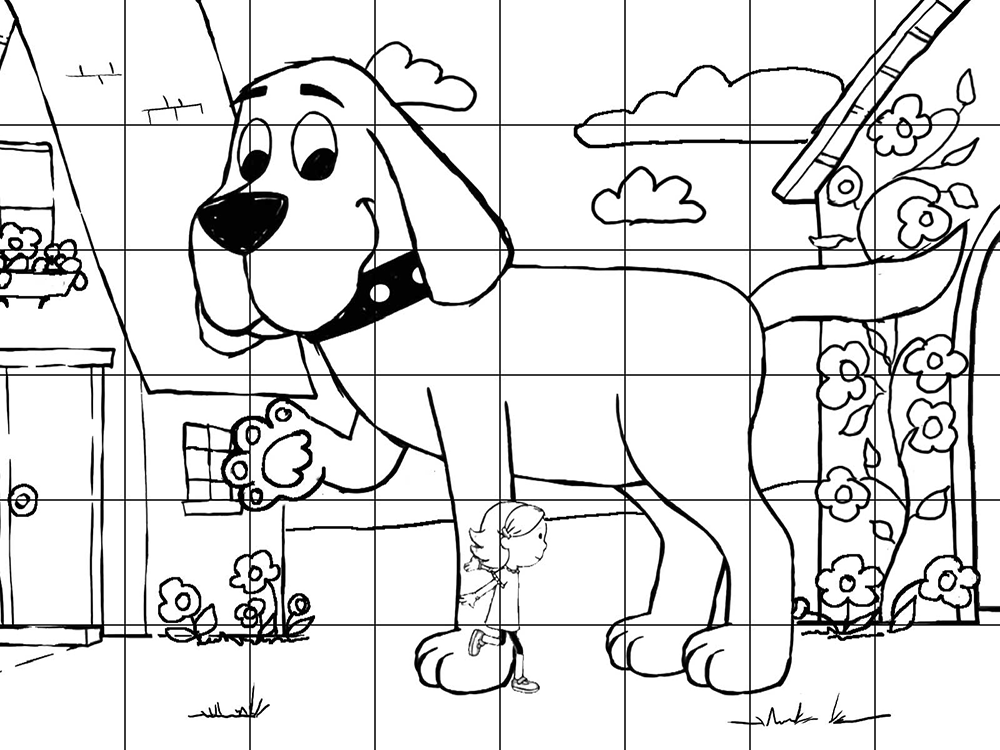

Each of the eight puzzles are straighforward puzzles to be solved. Once solved, the image will be a children's monster displaying a certain number of fingers. Each of the monsters are a color that matches a monster's color on the last page of the activity book. The number of fingers indexes into the matched monster's name. The order is achieved by matching the monsters on the last page to the body position of Max in Where the Wild Things Are, yielding the phrase NUN'S GOWN, leading to the answer HABIT.

